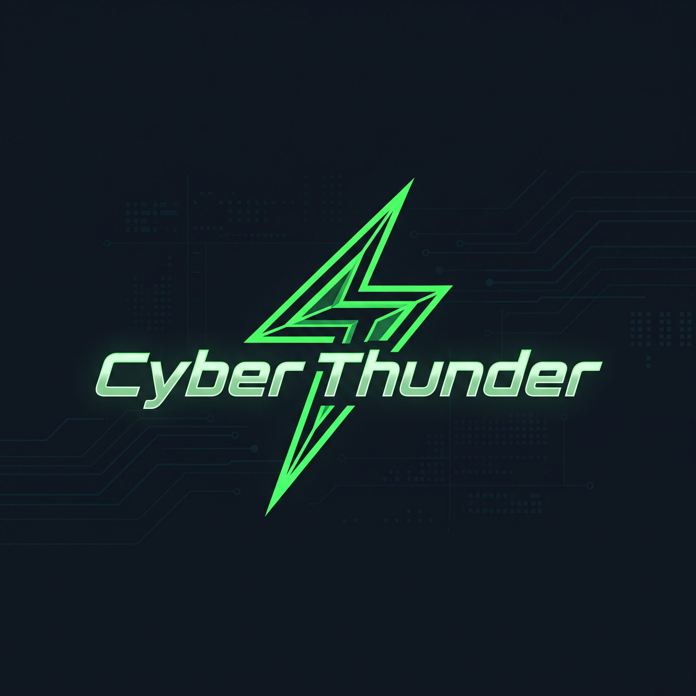
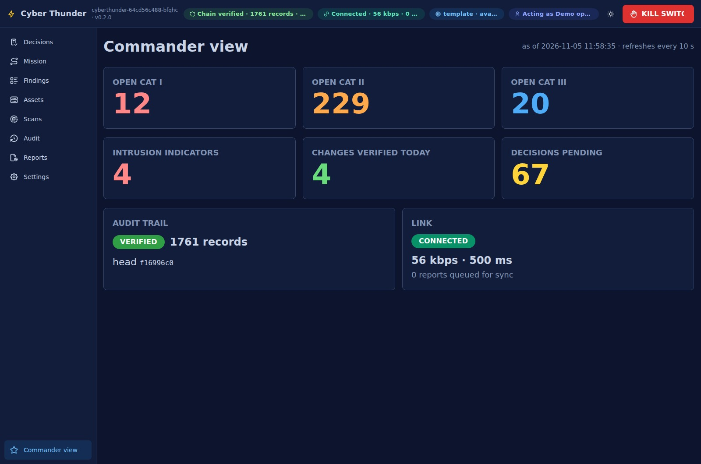
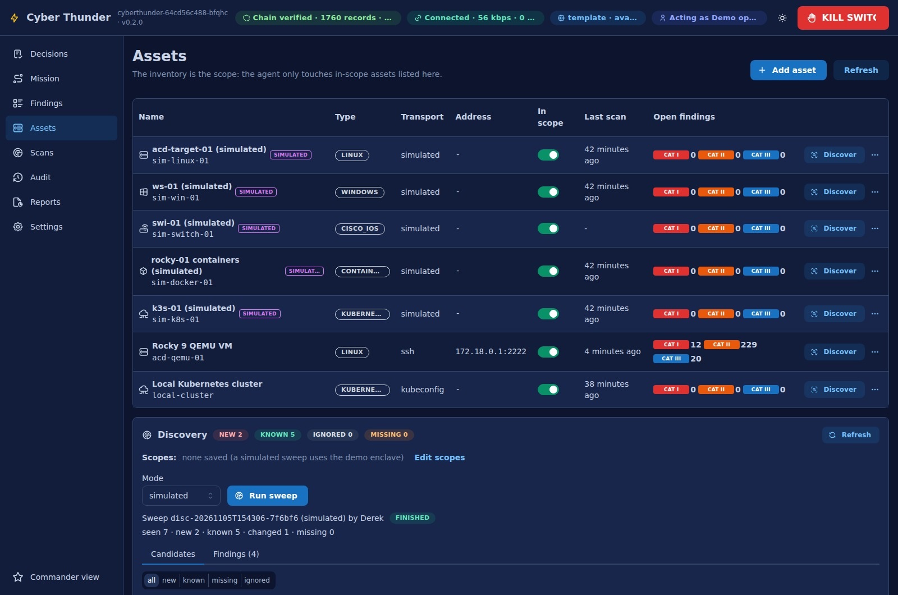

Authority stays human.
Named operators approve or deny. Scope checks and the kill switch block unauthorized actions.

+ AUTONOMOUS CYBER DEFENDER
The next vulnerability won’t wait for a better connection. Turn scanner findings into approved, verified, reversible fixes—with the Sailor in control.

REAL APP CAPTURE / ISOLATED DEMO RANGE
Deterministic checks. Cited evidence.
Local model or offline templates.
Approval before every remediation.
The hard part isn’t finding another red dot. It’s getting from “something is wrong” to “we know it’s fixed.”
New STIGs. Scanner exports. Device configs. Approval chains. Checklists. On an isolated enclave, that becomes a manual correlation job for people who already have a watch to stand.
Scan → spreadsheet → research → approval → change → evidence → paperwork
Evidence → decision → verified outcome
Follow the operator’s workflow. These are screenshots of the deployed application—not concept mockups.

↗ ENLARGE SCREENBring Linux, Windows, network devices, containers and Kubernetes into one inventory. An operator explicitly controls what the system can touch.
One operational picture. A clearly defined boundary.
Captured from the isolated demo deployment, November 5, 2026. The range includes simulated assets. Screenshots are recorded evidence, not a live status feed.
Try the moment that matters. An SSH configuration allows direct root login. The system has evidence and a vetted fix. It still needs your decision.
INTERACTIVE SIMULATION / NO LIVE CHANGESILLUSTRATIVE HOST / RANGE-LINUX-01
PermitRootLogin yesPermitRootLogin noConfirm a working non-root admin path before applying. This scenario illustrates the gate; it does not execute a command.
Useful at the edge means more than running a model. It means bounded actions, recoverable changes, and evidence you can inspect.
Named operators approve or deny. Scope checks and the kill switch block unauthorized actions.
Capture before-state, apply an approved library fix, verify the result, and automatically restore when verification fails.
Local state and templates keep the core workflow useful offline. Model explanations can run locally; scanner content must be staged.
Hash-chained audit records connect the finding, actor, approval and outcome. Saved reports preserve the evidence for the next watch.
The local app requires your demo-network connection and authorized Keycloak sign-in.